Chapter 13 Summary Statistics
We start by describing a simple yet powerful data analysis technique: constructing data summaries. Although the approach does not require mathematical models or probability, the motivation for summaries we construct will later help us understand both these topics.
Numerical data is often summarized with the average value. For example, the quality of a high school is sometimes summarized with one number: the average score on a standardized test. Occasionally, a second number is reported: the standard deviation. For example, you might read a report stating that scores were 680 plus or minus 50, (50 is the standard deviation). The report has summarized an entire vector of scores with just two numbers. Is this appropriate? Is there any important piece of information that we are missing by only looking at this summary rather than the entire list? Here we answer these questions and motivate several useful summary statistics, including the average and standard deviation.
13.1 Variable types
We will be working with two types of variables: categorical and numeric. Each can be divided into two other groups: categorical can be ordinal or not, whereas numerical variables can be discrete or continuous.
When each entry in a vector comes from one of a small number of groups, we refer to the data as categorical data. Two simple examples are sex (male or female) and US regions (Northeast, South, North Central, West). Some categorical data can be ordered even if they are not numbers, such as spiciness (mild, medium, hot). In statistics textbooks, ordered categorical data are referred to as ordinal data.
Examples of numerical data are population sizes, murder rates, and heights. Some numerical data can be treated as ordered categorical. We can further divide numerical data into continuous and discrete. Continuous variables are those that can take any value, such as heights, if measured with enough precision. For example, a pair of twins may be 68.12 and 68.11 inches, respectively. Counts, such as number of gun murders per year, are discrete because they have to be round numbers.
Keep in mind that discrete numeric data can be considered ordinal. Although this is technically true, we usually reserve the term ordinal data for variables belonging to a small number of different groups, with each group having many members. In contrast, when we have many groups with few cases in each group, we typically refer to them as discrete numerical variables. So, for example, the number of packs of cigarettes a person smokes a day, rounded to the closest pack, would be considered ordinal, while the actual number of cigarettes would be considered a numerical variable. But, indeed, there are examples that can be considered both numerical and ordinal.
13.2 Distributions
The most basic statistical summary of a list of objects or numbers is its distribution. The simplest way to think of a distribution is as a compact description of a list with many entries. This concept should not be new for readers of this book. For example, with categorical data, the distribution simply describes the proportion of each unique category. Here is an example with US state regions:
prop.table(table(state.region))
#> state.region
#> Northeast South North Central West
#> 0.18 0.32 0.24 0.26When the data is numerical, the task of constructing a summary based on the distribution is more challenging. We introduce an artificial, yet illustrative, motivating problem that will help us introduce the concepts needed to understand distributions.
13.2.1 Case study: describing student heights
Pretend that we have to describe the heights of our classmates to ET, an extraterrestrial that has never seen humans. As a first step, we need to collect data. To do this, we ask students to report their heights in inches. We ask them to provide sex information because we know there are two different distributions by sex. We collect the data and save it in the heights data frame:
library(tidyverse)
library(dslabs)
data(heights)One way to convey the heights to ET is to simply send him this list of 1050 heights. But there are much more effective ways to convey this information, and understanding the concept of a distribution will help. To simplify the explanation, we first focus on male heights. We examine the female height data in Section 13.7.1.
It turns out that, in some cases, the average and the standard deviation are pretty much all we need to understand the data. We will learn data visualization techniques that will help us determine when this two number summary is appropriate. These same techniques will serve as an alternative for when two numbers are not enough.
13.2.2 Empirical cumulative distribution functions
Numerical data that are not categorical also have distributions. In general, when data is not categorical, reporting the frequency of each entry is not an effective summary since most entries are unique. In our case study, while several students reported a height of 68 inches, only one student reported a height of 68.503937007874 inches and only one student reported a height 68.8976377952756 inches. We assume that they converted from 174 and 175 centimeters, respectively.
Statistics textbooks teach us that a more useful way to define a distribution for numeric data is to define a function that reports the proportion of the data entries \(x\) that are below \(a\), for all possible values of \(a\). This function is called the empirical cumulative distribution function (eCDF) and often denoted with \(F\):
\[ F(a) = \mbox{Proportion of data points that are less than or equal to }a\]
Here is a plot of \(F\) for the male height data:
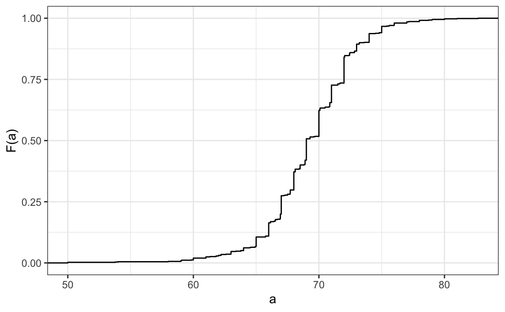
Similar to what the frequency table does for categorical data, the eCDF defines the distribution for numerical data. From the plot, we can see that 16% of the values are below 65, since \(F(66)=\) 0.164, or that 84% of the values are below 72, since \(F(72)=\) 0.841, and so on. In fact, we can report the proportion of values between any two heights, say \(a\) and \(b\), by computing \(F(b) - F(a)\). This means that if we send this plot above to ET, he will have all the information needed to reconstruct the entire list. Paraphrasing the expression “a picture is worth a thousand words”, in this case, a picture is as informative as 812 numbers.
Note: the reason we add the word empirical is because, as we will see in 14.10.1, the cumulative distribution function (CDF) can be defined mathematically, meaning without any data.
13.2.3 Histograms
Although the eCDF concept is widely discussed in statistics textbooks, the summary plot is actually not very popular in practice. The main reason is that it does not easily convey characteristics of interest such as: at what value is the distribution centered? Is the distribution symmetric? What ranges contain 95% of the values? Histograms are much preferred because they greatly facilitate answering such questions. Histograms sacrifice just a bit of information to produce summaries that are much easier to interpret.
The simplest way to make a histogram is to divide the span of our data into non-overlapping bins of the same size. Then, for each bin, we count the number of values that fall in that interval. The histogram plots these counts as bars with the base of the bar defined by the intervals. Here is the histogram for the height data splitting the range of values into one inch intervals: \((49.5, 50.5],(50.5, 51.5],(51.5,52.5],(52.5,53.5],...,(82.5,83.5]\)
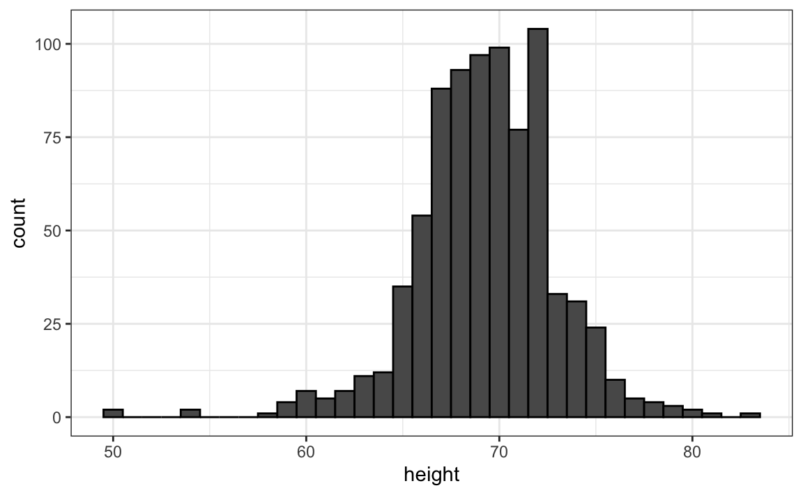
As you can see in the figure above, a histogram is similar to a barplot, but it differs in that the x-axis is numerical, not categorical.
If we send this plot to ET, he will immediately learn some important properties about our data. First, the range of the data is from 50 to 84 with the majority (more than 95%) between 63 and 75 inches. Second, the heights are close to symmetric around 69 inches. Also, by adding up counts, ET could obtain a very good approximation of the proportion of the data in any interval. Therefore, the histogram above is not only easy to interpret, but also provides almost all the information contained in the raw list of 812 heights with about 30 bin counts.
What information do we lose? Note that all values in each interval are treated the same when computing bin heights. So, for example, the histogram does not distinguish between 64, 64.1, and 64.2 inches. Given that these differences are almost unnoticeable to the eye, the practical implications are negligible and we were able to summarize the data to just 23 numbers.
13.2.4 Smoothed density
Smooth density plots are similar to histograms, but the data is not divided into bins. Here is what a smooth density plot looks like for our heights data:

In this plot, we no longer have sharp edges at the interval boundaries and many of the local peaks have been removed. Also, the scale of the y-axis changed from counts to density.
To understand the smooth densities, we have to understand estimates, a topic we don’t cover until later. However, we provide a heuristic explanation to help you understand the basics.
The main new concept you must understand is that we assume that our list of observed values is a subset of a much larger list of unobserved values. In the case of heights, you can imagine that our list of 812 male students comes from a hypothetical list containing all the heights of all the male students in all the world measured very precisely. Let’s say there are 1,000,000 of these measurements. This list of values has a distribution, like any list of values, and this larger distribution is really what we want to report to ET since it is much more general. Unfortunately, we don’t get to see it.
However, we make an assumption that helps us perhaps approximate it. If we had 1,000,000 values, measured very precisely, we could make a histogram with very, very small bins. The assumption is that if we show this, the height of consecutive bins will be similar. This is what we mean by smooth: we don’t have big jumps in the heights of consecutive bins. Below we have a hypothetical histogram with bins of size 1:

The smaller we make the bins, the smoother the histogram gets. Here are the histograms with bin width of 1, 0.5, and 0.1:
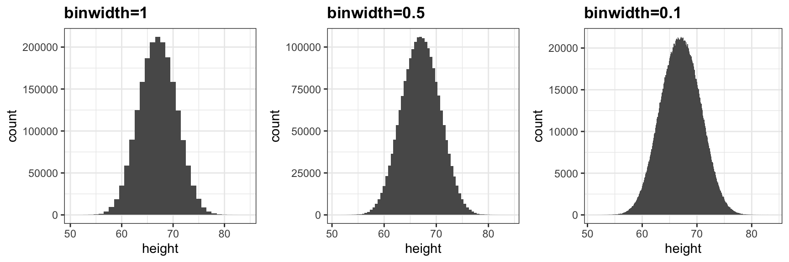
The smooth density is basically the curve that goes through the top of the histogram bars when the bins are very, very small. To make the curve not depend on the hypothetical size of the hypothetical list, we compute the curve on frequencies rather than counts:

Now, back to reality. We don’t have millions of measurements. Instead, we have 812 and we can’t make a histogram with very small bins.
We therefore make a histogram, using bin sizes appropriate for our data and computing frequencies rather than counts, and we draw a smooth curve that goes through the tops of the histogram bars. The following plots demonstrate the steps that lead to a smooth density:
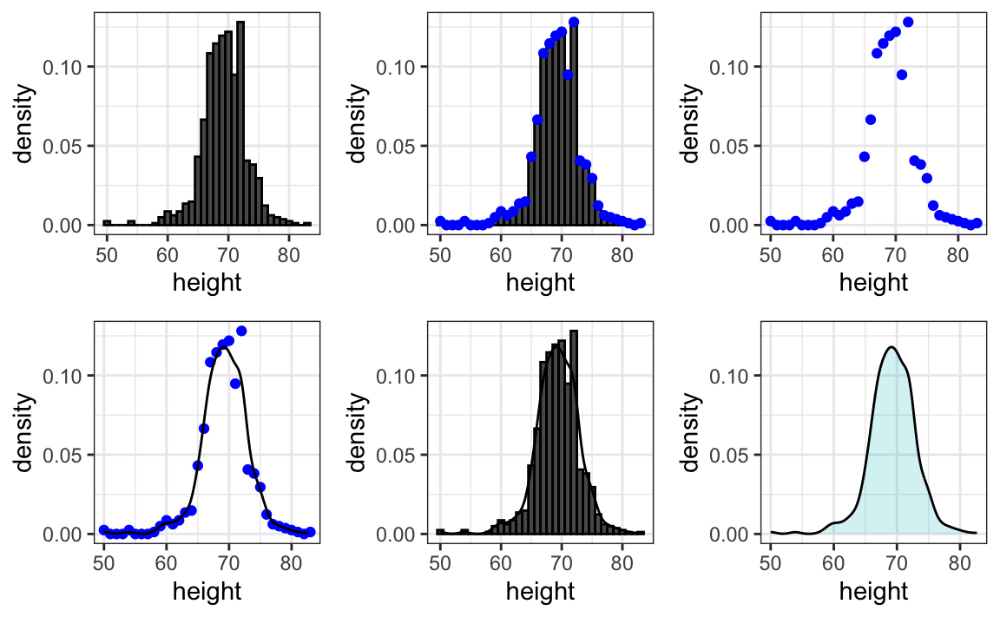
However, remember that smooth is a relative term. We can actually control the smoothness of the curve that defines the smooth density through an option in the function that computes the smooth density curve. Here are two examples using different degrees of smoothness on the same histogram:
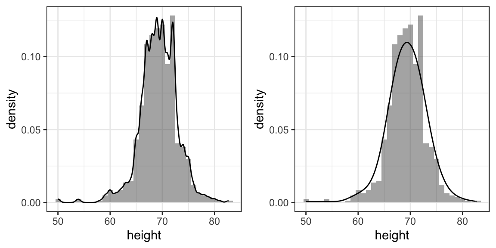
We need to make this choice with care as the resulting summary can change our interpretation of the data. We should select a degree of smoothness that we can defend as being representative of the underlying data. In the case of height, we really do have reason to believe that the proportion of people with similar heights should be the same. For example, the proportion that is 72 inches should be more similar to the proportion that is 71 than to the proportion that is 78 or 65. This implies that the curve should be pretty smooth; that is, the curve should look more like the example on the right than on the left.
While the histogram is an assumption-free summary, the smoothed density is based on some assumptions.
Note that interpreting the y-axis of a smooth density plot is not straightforward. It is scaled so that the area under the density curve adds up to 1. If you imagine we form a bin with a base 1 unit in length, the y-axis value tells us the proportion of values in that bin. However, this is only true for bins of size 1. For other size intervals, the best way to determine the proportion of data in that interval is by computing the proportion of the total area contained in that interval. For example, here are the proportion of values between 65 and 68:
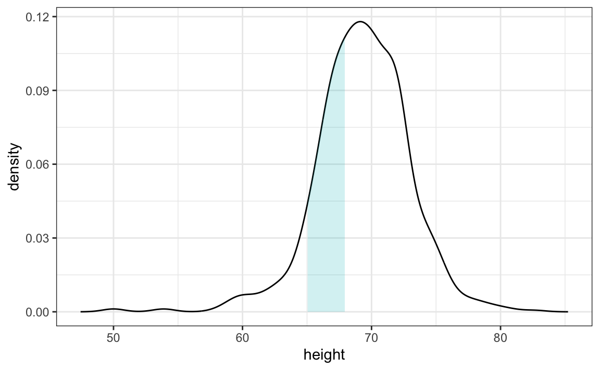
The proportion of this area is about 0.3, meaning that about 30% of male heights are between 65 and 68 inches.
By understanding this, we are ready to use the smooth density as a summary. For this dataset, we would feel quite comfortable with the smoothness assumption, and therefore with sharing this aesthetically pleasing figure with ET, which he could use to understand our male heights data:

13.3 Exercises
1. In the murders dataset, the region is a categorical variable and the following is its distribution:

To the closest 5%, what proportion of the states are in the North Central region?
2. Which of the following is true:
- The graph above is a histogram.
- The graph above shows only four numbers with a bar plot.
- Categories are not numbers, so it does not make sense to graph the distribution.
- The colors, not the height of the bars, describe the distribution.
3. The plot below shows the eCDF for male heights:

Based on the plot, what percentage of males are shorter than 75 inches?
- 100%
- 95%
- 80%
- 72 inches
4. To the closest inch, what height m has the property that 1/2 of the male students are taller than m and 1/2 are shorter?
- 61 inches
- 64 inches
- 69 inches
- 74 inches
5. Here is an eCDF of the murder rates across states:
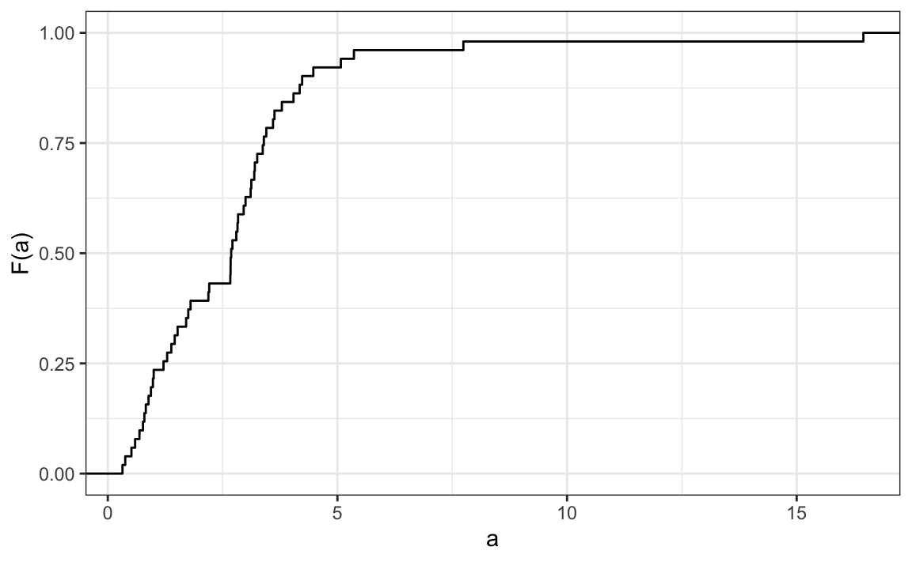
Knowing that there are 51 states (counting DC) and based on this plot, how many states have murder rates larger than 10 per 100,000 people?
- 1
- 5
- 10
- 50
6. Based on the eCDF above, which of the following statements are true:
- About half the states have murder rates above 7 per 100,000 and the other half below.
- Most states have murder rates below 2 per 100,000.
- All the states have murder rates above 2 per 100,000.
- With the exception of 4 states, the murder rates are below 5 per 100,000.
7. Below is a histogram of male heights in our heights dataset:

Based on this plot, how many males are between 63.5 and 65.5?
- 10
- 24
- 34
- 100
8. About what percentage are shorter than 60 inches?
- 1%
- 10%
- 25%
- 50%
9. Based on the density plot below, about what proportion of US states have populations larger than 10 million?
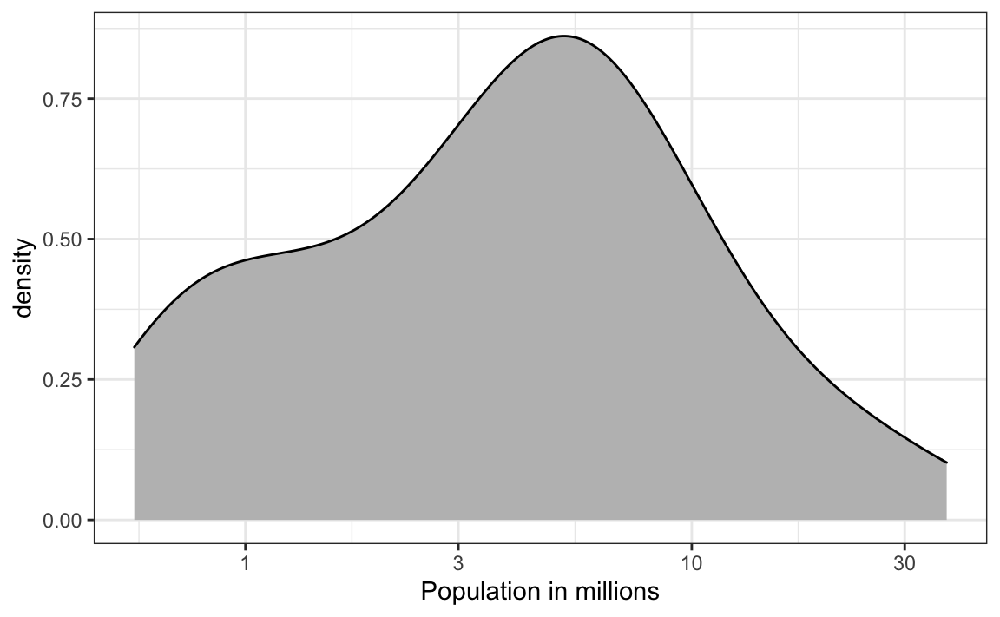
- 0.02
- 0.15
- 0.50
- 0.55
10. Below are three density plots. Is it possible that they are from the same dataset?
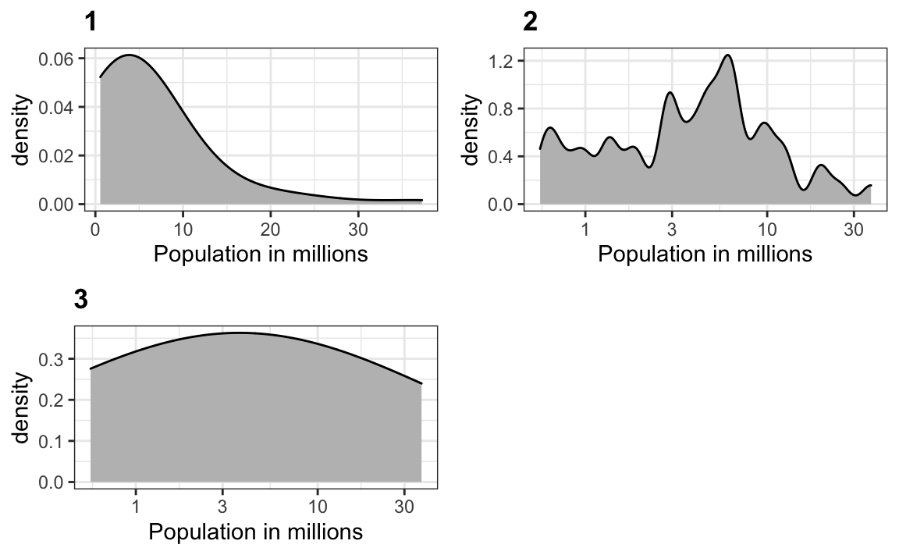
Which of the following statements is true:
- It is impossible that they are from the same dataset.
- They are from the same dataset, but the plots are different due to code errors.
- They are the same dataset, but the first and second plot undersmooth and the third oversmooths.
- They are the same dataset, but the first is not in the log scale, the second undersmooths, and the third oversmooths.
13.4 The normal distribution
Histograms and density plots provide excellent summaries of a distribution. But can we summarize even further? We often see the average and standard deviation used as summary statistics: a two-number summary! To understand what these summaries are and why they are so widely used, we need to understand the normal distribution.
The normal distribution, also known as the bell curve and as the Gaussian distribution, is one of the most famous mathematical concepts in history. A reason for this is that approximately normal distributions occur in many situations, including gambling winnings, heights, weights, blood pressure, standardized test scores, and experimental measurement errors. There are explanations for this, but we describe these later. Here we focus on how the normal distribution helps us summarize data.
Rather than using data, the normal distribution is defined with a mathematical formula. For any interval \((a,b)\), the proportion of values in that interval can be computed using this formula:
\[\mbox{Pr}(a < x \leq b) = \int_a^b \frac{1}{\sqrt{2\pi}s} e^{-\frac{1}{2}\left( \frac{x-m}{s} \right)^2} \, dx\]
You don’t need to memorize or understand the details of the formula. But note that it is completely defined by just two parameters: \(m\) and \(s\). The rest of the symbols in the formula represent the interval ends, \(a\) and \(b\), and known mathematical constants \(\pi\) and \(e\). These two parameters, \(m\) and \(s\), are referred to as the average (also called the mean) and the standard deviation (SD) of the distribution, respectively.
The distribution is symmetric, centered at the average, and most values (about 95%) are within 2 SDs from the average. Here is what the normal distribution looks like when the average is 0 and the SD is 1:
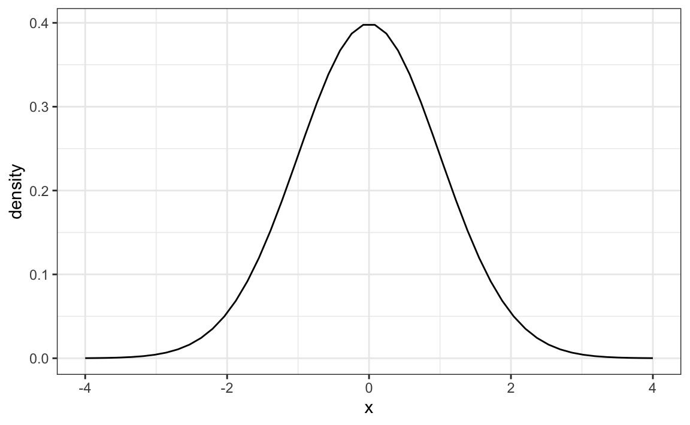
The fact that the distribution is defined by just two parameters implies that if a dataset is approximated by a normal distribution, all the information needed to describe the distribution can be encoded in just two numbers: the average and the standard deviation. We now define these values for an arbitrary list of numbers.
For a list of numbers contained in a vector x, the average is defined as:
m <- sum(x) / length(x)and the SD is defined as:
s <- sqrt(sum((x-mu)^2) / length(x))which can be interpreted as the average distance between values and their average.
Let’s compute the values for the height for males which we will store in the object \(x\):
index <- heights$sex == "Male"
x <- heights$height[index]The pre-built functions mean and sd can be used here:
m <- mean(x)
s <- sd(x)
c(average = m, sd = s)
#> average sd
#> 69.31 3.61Advacned note: for reasons explained in statistics textbooks, sd divides by length(x)-1 rather than length(x). So sd(x) and
sqrt(sum((x-mu)^2) / length(x)) are when length(x) is large, these two are practically equal.
Here is a plot of the smooth density and the normal distribution with mean = 69.3 and SD = 3.6 plotted as a black line with our student height smooth density in blue:

The normal distribution does appear to be quite a good approximation here. We now will see how well this approximation works at predicting the proportion of values within intervals.
13.4.1 Standard units
For data that is approximately normally distributed, it is convenient to think in terms of standard units. The standard unit of a value tells us how many standard deviations away from the average it is. Specifically, for a value x from a vector X, we define the value of x in standard units as z = (x - m)/s with m and s the average and standard deviation of X, respectively. Why is this convenient?
First look back at the formula for the normal distribution and note that what is being exponentiated is \(-z^2/2\) with \(z\) equivalent to \(x\) in standard units. Because the maximum of \(e^{-z^2/2}\) is when \(z=0\), this explains why the maximum of the distribution occurs at the average. It also explains the symmetry since \(- z^2/2\) is symmetric around 0. Second, note that if we convert the normally distributed data to standard units, we can quickly know if, for example, a person is about average (\(z=0\)), one of the largest (\(z \approx 2\)), one of the smallest (\(z \approx -2\)), or an extremely rare occurrence (\(z > 3\) or \(z < -3\)). Remember that it does not matter what the original units are, these rules apply to any data that is approximately normal.
In R, we can obtain standard units using the function scale:
z <- scale(x)Now to see how many men are within 2 SDs from the average, we simply type:
mean(abs(z) < 2)
#> [1] 0.95The proportion is about 95%, which is what the normal distribution predicts! To further confirm that, in fact, the approximation is a good one, we can use quantile-quantile plots.
13.4.2 Quantile-quantile plots
A systematic way to assess how well the normal distribution fits the data is to check if the observed and predicted proportions match. In general, this is the approach of the quantile-quantile plot (QQ-plot).
First let’s define the theoretical quantiles for the normal distribution. In statistics books we use the symbol \(\Phi(x)\) to define the function that gives us the proportion of a standard normal distributed data that are smaller than \(x\). So, for example, \(\Phi(-1.96) = 0.025\) and \(\Phi(1.96) = 0.975\). In R, we can evaluate \(\Phi\) using the pnorm function:
pnorm(-1.96)
#> [1] 0.025The inverse function \(\Phi^{-1}(x)\) gives us the theoretical quantiles for the normal distribution. So, for example, \(\Phi^{-1}(0.975) = 1.96\). In R, we can evaluate the inverse of \(\Phi\) using the qnorm function.
qnorm(0.975)
#> [1] 1.96Note that these calculations are for the standard normal distribution by default (mean = 0, standard deviation = 1), but we can also define these for any normal distribution. We can do this using the mean and sd arguments in the pnorm and qnorm function. For example, we can use qnorm to determine quantiles of a distribution with a specific average and standard deviation
qnorm(0.975, mean = 5, sd = 2)
#> [1] 8.92For the normal distribution, all the calculations related to quantiles are done without data, thus the name theoretical quantiles. But quantiles can be defined for any distribution, including an empirical one. So if we have data in a vector \(x\), we can define the quantile associated with any proportion \(p\) as the \(q\) for which the proportion of values below \(q\) is \(p\). Using R code, we can define q as the value for which mean(x <= q) = p. Notice that not all \(p\) have a \(q\) for which the proportion is exactly \(p\). There are several ways of defining the best \(q\) as discussed in the help for the quantile function.
To give a quick example, for the male heights data, we have that:
mean(x <= 69.5)
#> [1] 0.515So about 50% are shorter or equal to 69 inches. This implies that if \(p=0.50\) then \(q=69.5\).
The idea of a QQ-plot is that if your data is well approximated by normal distribution then the quantiles of your data should be similar to the quantiles of a normal distribution. To construct a QQ-plot, we do the following:
- Define a vector of \(m\) proportions \(p_1, p_2, \dots, p_m\).
- Define a vector of quantiles \(q_1, \dots, q_m\) for your data for the proportions \(p_1, \dots, p_m\). We refer to these as the sample quantiles.
- Define a vector of theoretical quantiles for the proportions \(p_1, \dots, p_m\) for a normal distribution with the same average and standard deviation as the data.
- Plot the sample quantiles versus the theoretical quantiles.
Let’s construct a QQ-plot using R code. Start by defining the vector of proportions.
p <- seq(0.05, 0.95, 0.05)To obtain the quantiles from the data, we can use the quantile function like this:
sample_quantiles <- quantile(x, p)To obtain the theoretical normal distribution quantiles with the corresponding average and SD, we use the qnorm function:
theoretical_quantiles <- qnorm(p, mean = mean(x), sd = sd(x))To see if they match or not, we plot them against each other and draw the identity line:
qplot(theoretical_quantiles, sample_quantiles) + geom_abline()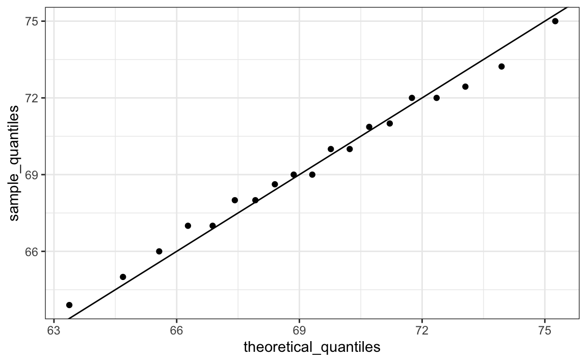
Notice that this code becomes much cleaner if we use standard units:
sample_quantiles <- quantile(z, p)
theoretical_quantiles <- qnorm(p)
qplot(theoretical_quantiles, sample_quantiles) + geom_abline()The above code is included to help describe QQ-plots. However, in practice it is easier to use ggplot2 code:
heights |> filter(sex == "Male") |>
ggplot(aes(sample = scale(height))) +
geom_qq() +
geom_abline()While for the illustration above we used 20 quantiles, the default from the geom_qq function is to use as many quantiles as data points.
Note that although here we used qqplots to compare an observed distribution to the mathamatically defeinde normal distribution, QQ-plots can be used to compare any two distributions.
13.5 Percentiles
Before we move on, let’s define some terms that are commonly used in exploratory data analysis.
Percentiles are special cases of quantiles that are commonly used. The percentiles are the quantiles you obtain when setting the \(p\) at \(0.01, 0.02, ..., 0.99\). We call, for example, the case of \(p=0.25\) the 25th percentile, which gives us a number for which 25% of the data is below. The most famous percentile is the 50th, also known as the median.
For the normal distribution the median and average are the same, but this is generally not the case.
Another special case that receives a name are the quartiles, which are obtained when setting \(p=0.25,0.50\), and \(0.75\).
13.6 Boxplots
To introduce boxplots we will use a dataset of US murders by state. Suppose we want to summarize the murder rate distribution. Using the techniques we have learned, we can quickly see that the normal approximation does not apply here:
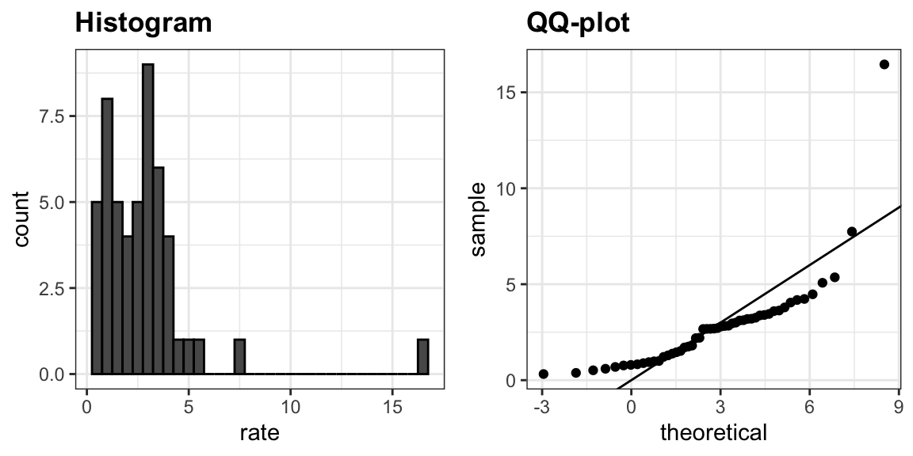
In this case, the histogram above or a smooth density plot would serve as a relatively succinct summary.
Now suppose those used to receiving just two numbers as summaries ask us for a more compact numerical summary.
The boxplot provides a five-number summary composed of the range along with the quartiles (the 25th, 50th, and 75th percentiles). The boxplot often ignore outliers when computing the range and instead plot these as independent points. We provide a detailed explanation of outliers later. Finally, he suggested we plot these numbers as a “box” with “whiskers” like this:
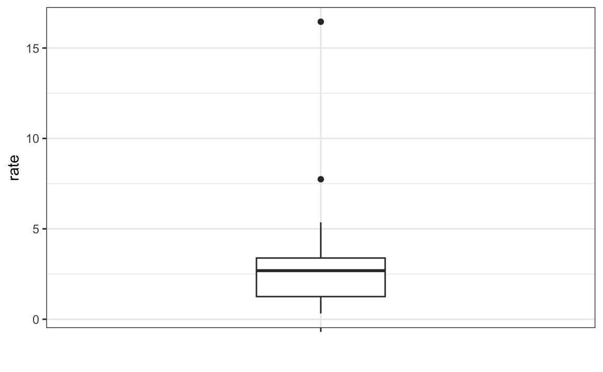
with the box defined by the 25% and 75% percentile and the whiskers showing the range. The distance between these two is called the interquartile range. The two points are considered outliers by the default R function we used. The median is shown with a horizontal line. Today, we call these boxplots.
From just this simple plot, we know that the median is about 2.5, that the distribution is not symmetric, and that the range is 0 to 5 for the great majority of states with two exceptions.
13.7 Stratification
In data analysis we often divide observations into groups based on the values of one or more variables associated with those observations. For example in the next section we divide the height values into groups based on a sex variable: females and males. We call this procedure stratification and refer to the resulting groups as strata.
Stratification is common in data visualization because we are often interested in how the distribution of variables differs across different subgroups. We will see several examples throughout this part of the book.
13.7.1 Case study: describing student heights (continued)
Using the histogram, density plots, and QQ-plots, we have become convinced that the male height data is well approximated with a normal distribution. In this case, we report back to ET a very succinct summary: male heights follow a normal distribution with an average of 69.3 inches and a SD of 3.6 inches. With this information, ET will have a good idea of what to expect when he meets our male students. However, to provide a complete picture we need to also provide a summary of the female heights.
We learned that boxplots are useful when we want to quickly compare two or more distributions. Here are the heights for men and women:
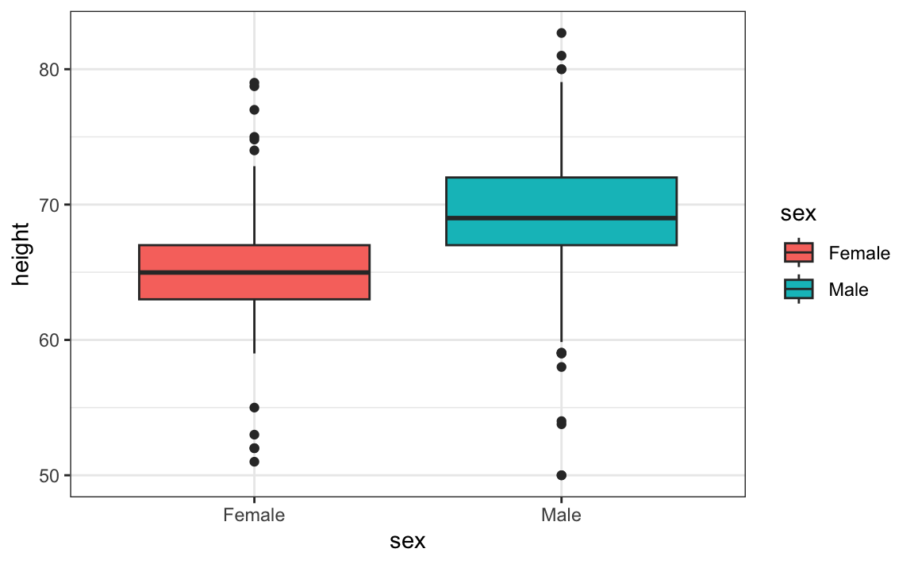
The plot immediately reveals that males are, on average, taller than females. The standard deviations appear to be similar. But does the normal approximation also work for the female height data collected by the survey? We expect that they will follow a normal distribution, just like males. However, exploratory plots reveal that the approximation is not as useful:

We see something we did not see for the males: the density plot has a second bump. Also, the QQ-plot shows that the highest points tend to be taller than expected by the normal distribution. Finally, we also see five points in the QQ-plot that suggest shorter than expected heights for a normal distribution. When reporting back to ET, we might need to provide a histogram rather than just the average and standard deviation for the female heights.
We have noticed what we didn’t expect to see. If we look at other female height distributions, we do find that they are well approximated with a normal distribution. So why are our female students different? Is our class a requirement for the female basketball team? Are small proportions of females claiming to be taller than they are? Another, perhaps more likely, explanation is that in the form students used to enter their heights, FEMALE was the default sex and some males entered their heights, but forgot to change the sex variable. In any case, data visualization has helped discover a potential flaw in our data.
Regarding the five smallest values, note that these values are:
heights |> filter(sex == "Female") |>
top_n(5, desc(height)) |>
pull(height)
#> [1] 51 53 55 52 52Because these are reported heights, a possibility is that the student meant to enter 5'1", 5'2", 5'3" or 5'5".
13.8 Exercises
1. Define variables containing the heights of males and females like this:
library(dslabs)
data(heights)
male <- heights$height[heights$sex == "Male"]
female <- heights$height[heights$sex == "Female"]How many measurements do we have for each?
2. Suppose we can’t make a plot and want to compare the distributions side by side. We can’t just list all the numbers. Instead, we will look at the percentiles. Create a five row table showing female_percentiles and male_percentiles with the 10th, 30th, 50th, 70th, & 90th percentiles for each sex. Then create a data frame with these two as columns.
3. Study the following boxplots showing population sizes by country:

Which continent has the country with the biggest population size?
4. What continent has the largest median population size?
5. What is median population size for Africa to the nearest million?
6. What proportion of countries in Europe have populations below 14 million?
- 0.99
- 0.75
- 0.50
- 0.25
7. If we use a log transformation, which continent shown above has the largest interquartile range?
8. Load the height data set and create a vector x with just the male heights:
library(dslabs)
data(heights)
x <- heights$height[heights$sex=="Male"]What proportion of the data is between 69 and 72 inches (taller than 69, but shorter or equal to 72)? Hint: use a logical operator and mean.
9. Suppose all you know about the data is the average and the standard deviation. Use the normal approximation to estimate the proportion you just calculated. Hint: start by computing the average and standard deviation. Then use the pnorm function to predict the proportions.
10. Notice that the approximation calculated in question nine is very close to the exact calculation in the first question. Now perform the same task for more extreme values. Compare the exact calculation and the normal approximation for the interval (79,81]. How many times bigger is the actual proportion than the approximation?
11. Approximate the distribution of adult men in the world as normally distributed with an average of 69 inches and a standard deviation of 3 inches. Using this approximation, estimate the proportion of adult men that are 7 feet tall or taller, referred to as seven footers. Hint: use the pnorm function.
12. There are about 1 billion men between the ages of 18 and 40 in the world. Use your answer to the previous question to estimate how many of these men (18-40 year olds) are seven feet tall or taller in the world?
13. There are about 10 National Basketball Association (NBA) players that are 7 feet tall or higher. Using the answer to the previous two questions, what proportion of the world’s 18-to-40-year-old seven footers are in the NBA?
14. Repeat the calculations performed in the previous question for Lebron James’ height: 6 feet 8 inches. There are about 150 players that are at least that tall.
15. In answering the previous questions, we found that it is not at all rare for a seven footer to become an NBA player. What would be a fair critique of our calculations:
- Practice and talent are what make a great basketball player, not height.
- The normal approximation is not appropriate for heights.
- As seen in question 10, the normal approximation tends to underestimate the extreme values. It’s possible that there are more seven footers than we predicted.
- As seen in question 10, the normal approximation tends to overestimate the extreme values. It’s possible that there are fewer seven footers than we predicted.
13.9 Robust summaries
13.9.1 Outliers
We previously described how boxplots show outliers, but we did not provide a precise definition. Here we discuss outliers, approaches that can help detect them, and summaries that take into account their presence.
Outliers are very common in real-world data anlysis. Data recording can be complex and it is common to observe data points generated in error. For example, an old monitoring device may read out nonsensical measurements before completely failing. Human error is also a source of outliers, in particular when data entry is done manually. An individual, for instance, may mistakenly enter their height in centimeters instead of inches or put the decimal in the wrong place.
How do we distinguish an outlier from measurements that were too big or too small simply due to expected variability? This is not always an easy question to answer, but we try to provide some guidance. Let’s begin with a simple case.
Suppose a colleague is charged with collecting demography data for a group of males. The data report height in feet and are stored in the object:
library(tidyverse)
library(dslabs)
data(outlier_example)
str(outlier_example)
#> num [1:500] 5.59 5.8 5.54 6.15 5.83 5.54 5.87 5.93 5.89 5.67 ...Our colleague uses the fact that heights are usually well approximated by a normal distribution and summarizes the data with average and standard deviation
mean(outlier_example)
#> [1] 6.1
sd(outlier_example)
#> [1] 7.8and writes a report on the interesting fact that this group of males is much taller than usual. The average height is over six feet tall! Using your data analysis skills, however, you notice something else that is unexpected: the standard deviation is over 7 feet. Adding and subtracting two standard deviations, you note that 95% of this population will have heights between -9.489, 21.697 feet, which does not make sense. A quick plot reveals the problem:
boxplot(outlier_example)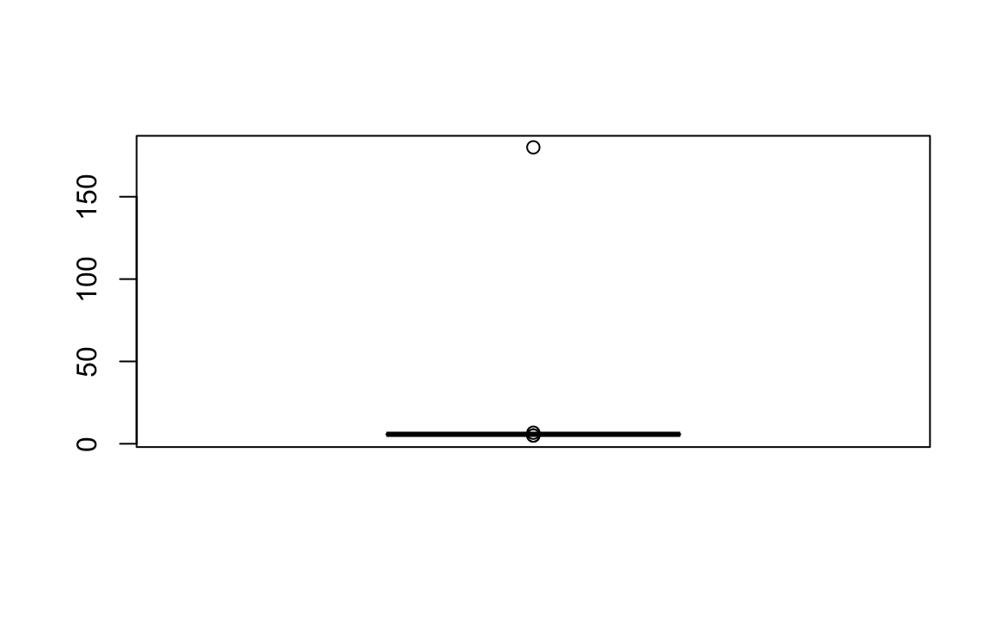
There appears to be at least one value that is nonsensical, since we know that a height of 180 feet is impossible. The boxplot detects this point as an outlier.
13.9.2 Median
When we have an outlier like this, the average can become very large. Mathematically, we can make the average as large as we want by simply changing one number: with 500 data points, we can increase the average by any amount \(\Delta\) by adding \(\Delta \times\) 500 to a single number. The median, defined as the value for which half the values are smaller and the other half are bigger, is robust to such outliers. No matter how large we make the largest point, the median remains the same.
With this data the median is:
median(outlier_example)
#> [1] 5.74which is about 5 feet and 9 inches.
The median is what boxplots display as a horizontal line.
13.9.3 The inter quartile range (IQR)
The box in boxplots is defined by the first and third quartile. These are meant to provide an idea of the variability in the data: 50% of the data is within this range. The difference between the 3rd and 1st quartile (or 75th and 25th percentiles) is referred to as the inter quartile range (IQR). As is the case with the median, this quantity will be robust to outliers as large values do not affect it. We can do some math to see that for normally distributed data, the IQR / 1.349 approximates the standard deviation of the data had an outlier not been present. We can see that this works well in our example since we get a standard deviation estimate of:
IQR(outlier_example) / 1.349
#> [1] 0.245which is about 3 inches.
13.9.4 Tukey’s definition of an outlier
In R, points falling outside the whiskers of the boxplot are referred to as outliers. This definition of outlier was introduced by John Tukey. The top whisker ends at the 75th percentile plus 1.5 \(\times\) IQR. Similarly the bottom whisker ends at the 25th percentile minus 1.5\(\times\) IQR. If we define the first and third quartiles as \(Q_1\) and \(Q_3\), respectively, then an outlier is anything outside the range:
\[[Q_1 - 1.5 \times (Q_3 - Q1), Q_3 + 1.5 \times (Q_3 - Q1)].\]
When the data is normally distributed, the standard units of these values are:
q3 <- qnorm(0.75)
q1 <- qnorm(0.25)
iqr <- q3 - q1
r <- c(q1 - 1.5*iqr, q3 + 1.5*iqr)
r
#> [1] -2.7 2.7Using the pnorm function, we see that 99.3% of the data falls in this interval.
Keep in mind that this is not such an extreme event: if we have 1,000 data points that are normally distributed, we expect to see about 7 outside of this range. But these would not be outliers since we expect to see them under the typical variation.
If we want an outlier to be rarer, we can increase the 1.5 to a larger number. Tukey also used 3 and called these far out outliers. With a normal distribution,
100%
of the data falls in this interval. This translates into about 2 in a million chance of being outside the range. In the geom_boxplot function, this can be controlled by the outlier.size argument, which defaults to 1.5.
The 180 inches measurement is well beyond the range of the height data:
max_height <- quantile(outlier_example, 0.75) + 3*IQR(outlier_example)
max_height
#> 75%
#> 6.91If we take this value out, we can see that the data is in fact normally distributed as expected:
x <- outlier_example[outlier_example < max_height]
qqnorm(x)
qqline(x)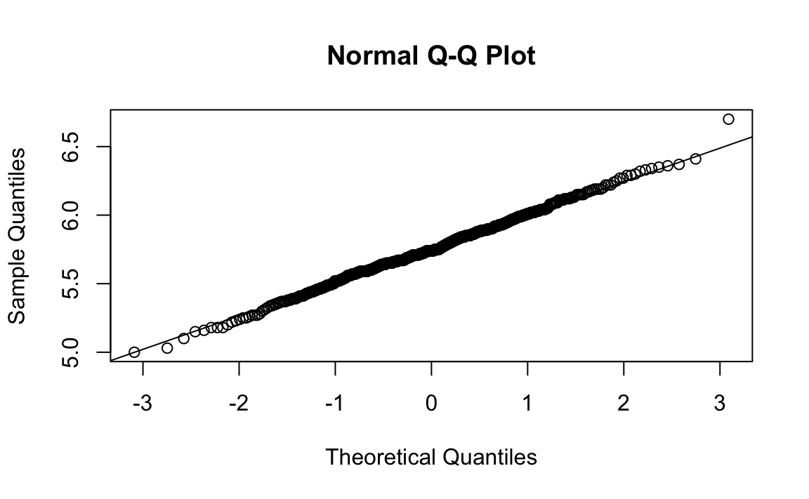
13.9.5 Median absolute deviation
Another way to robustly estimate the standard deviation in the presence of outliers is to use the median absolute deviation (MAD). To compute the MAD, we first compute the median, and then for each value we compute the distance between that value and the median. The MAD is defined as the median of these distances. For technical reasons not discussed here, this quantity needs to be multiplied by 1.4826 to assure it approximates the actual standard deviation. The mad function already incorporates this correction. For the height data, we get a MAD of:
mad(outlier_example)
#> [1] 0.237which is about 3 inches.
13.10 Exercises
We are going to use the HistData package. If it is not installed you can install it like this:
install.packages("HistData")Load the height data set and create a vector x with just the male heights used in Galton’s data on the heights of parents and their children from his historic research on heredity.
library(HistData)
data(Galton)
x <- Galton$child1. Compute the average and median of these data.
2. Compute the median and median absolute deviation of these data.
3. Now suppose Galton made a mistake when entering the first value and forgot to use the decimal point. You can imitate this error by typing:
x_with_error <- x
x_with_error[1] <- x_with_error[1]*10How many inches does the average grow after this mistake?
4. How many inches does the SD grow after this mistake?
5. How many inches does the median grow after this mistake?
6. How many inches does the MAD grow after this mistake?
7. How could you use exploratory data analysis to detect that an error was made?
- Since it is only one value out of many, we will not be able to detect this.
- We would see an obvious shift in the distribution.
- A boxplot, histogram, or qq-plot would reveal a clear outlier.
- A scatterplot would show high levels of measurement error.
8. How much can the average accidentally grow with mistakes like this? Write a function called error_avg that takes a value k and returns the average of the vector x after the first entry changed to k. Show the results for k=10000 and k=-10000.
13.10.1 Case study: self-reported student heights
The heights we have been looking at are not the original heights reported by students. The original reported heights are also included in the dslabs package and can be loaded like this:
library(dslabs)
data("reported_heights")Height is a character vector so we create a new column with the numeric version:
reported_heights <- reported_heights |>
mutate(original_heights = height, height = as.numeric(height))
#> Warning in mask$eval_all_mutate(quo): NAs introduced by coercionNote that we get a warning about NAs. This is because some of the self reported heights were not numbers. We can see why we get these:
reported_heights |> filter(is.na(height)) |> head()
#> time_stamp sex height original_heights
#> 1 2014-09-02 15:16:28 Male NA 5' 4"
#> 2 2014-09-02 15:16:37 Female NA 165cm
#> 3 2014-09-02 15:16:52 Male NA 5'7
#> 4 2014-09-02 15:16:56 Male NA >9000
#> 5 2014-09-02 15:16:56 Male NA 5'7"
#> 6 2014-09-02 15:17:09 Female NA 5'3"Some students self-reported their heights using feet and inches rather than just inches. Others used centimeters and others were just trolling. For now we will remove these entries:
reported_heights <- filter(reported_heights, !is.na(height))If we compute the average and standard deviation, we notice that we obtain strange results. The average and standard deviation are different from the median and MAD:
reported_heights |>
group_by(sex) |>
summarize(average = mean(height), sd = sd(height),
median = median(height), MAD = mad(height))
#> # A tibble: 2 × 5
#> sex average sd median MAD
#> <chr> <dbl> <dbl> <dbl> <dbl>
#> 1 Female 63.4 27.9 64.2 4.05
#> 2 Male 103. 530. 70 4.45This suggests that we have outliers, which is confirmed by creating a boxplot:
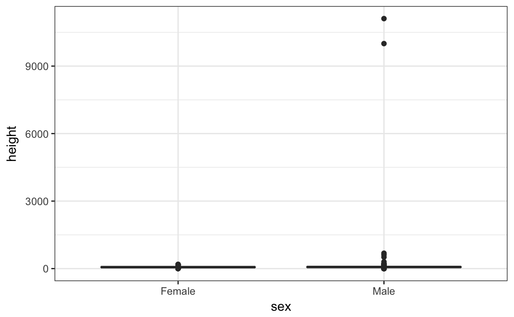
We can see some rather extreme values. To see what these values are, we can quickly look at the largest values using the arrange function:
reported_heights |> arrange(desc(height)) |> top_n(10, height)
#> time_stamp sex height original_heights
#> 1 2014-09-03 23:55:37 Male 11111 11111
#> 2 2016-04-10 22:45:49 Male 10000 10000
#> 3 2015-08-10 03:10:01 Male 684 684
#> 4 2015-02-27 18:05:06 Male 612 612
#> 5 2014-09-02 15:16:41 Male 511 511
#> 6 2014-09-07 20:53:43 Male 300 300
#> 7 2014-11-28 12:18:40 Male 214 214
#> 8 2017-04-03 16:16:57 Male 210 210
#> 9 2015-11-24 10:39:45 Male 192 192
#> 10 2014-12-26 10:00:12 Male 190 190
#> 11 2016-11-06 10:21:02 Female 190 190The first seven entries look like strange errors. However, the next few look like they were entered as centimeters instead of inches. Since 184 cm is equivalent to six feet tall, we suspect that 184 was actually meant to be 72 inches.
We can review all the nonsensical answers by looking at the data considered to be far out by Tukey:
whisker <- 3*IQR(reported_heights$height)
max_height <- quantile(reported_heights$height, .75) + whisker
min_height <- quantile(reported_heights$height, .25) - whisker
reported_heights |>
filter(!between(height, min_height, max_height)) |>
select(original_heights) |>
head(n=10) |> pull(original_heights)
#> [1] "6" "5.3" "511" "6" "2" "5.25" "5.5" "11111"
#> [9] "6" "6.5"Examining these heights carefully, we see two common mistakes: entries in centimeters, which turn out to be too large, and entries of the form x.y with x and y representing feet and inches, respectively, which turn out to be too small. Some of the even smaller values, such as 1.6, could be entries in meters.